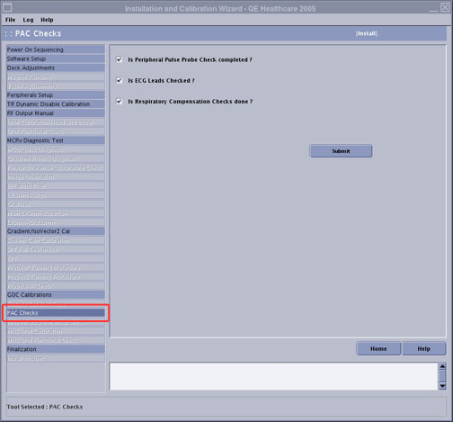

ICW PAC Checks
Prerequisites
Overview
PAC Checks is one of the final steps in the installation portion of the Installation and Calibration Wizard (ICW), though it can be done at any time during the installation. During PAC Checks, these tasks that must be completed:
-
Peripheral Pulse Probe Check
-
ECG Leads Checks
-
Respiratory Compensation Checks
Procedure
- Insert the Service Key.
- Launch the Service Browser (Common Service Desktop).
- Click the Calibration tab.
If in Install or Upgrade mode, select Install and Calibration Wizard and Click here to start this tool.
- PAC Checks is one of the final steps after Install In Spec.
Figure 1. PAC Checks

- Perform Peripheral Pulse Probe Check. When completed, check the box next to Is Peripheral Pulse Probe Check completed?
- Perform the ECG Leads Checks ordered by the customer. When completed, check the box next to Is ECG Leads checked?
- Perform Respiratory Compensation Checks. When completed, check the box next to Is Respiratory Checks Done?
- Click Submit.